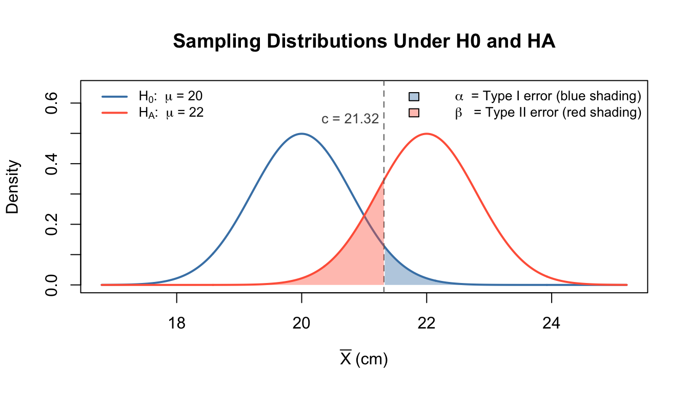
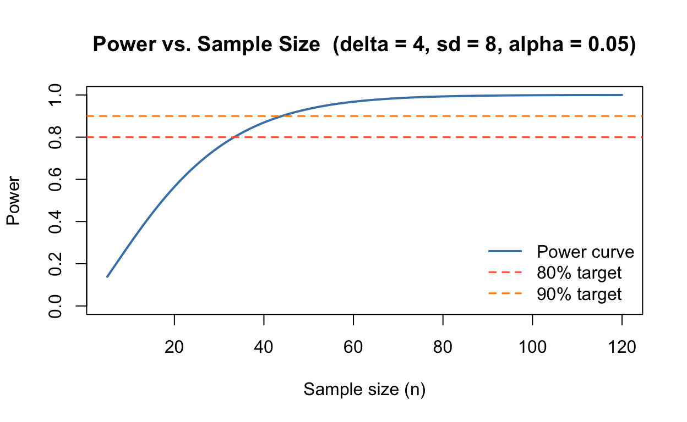
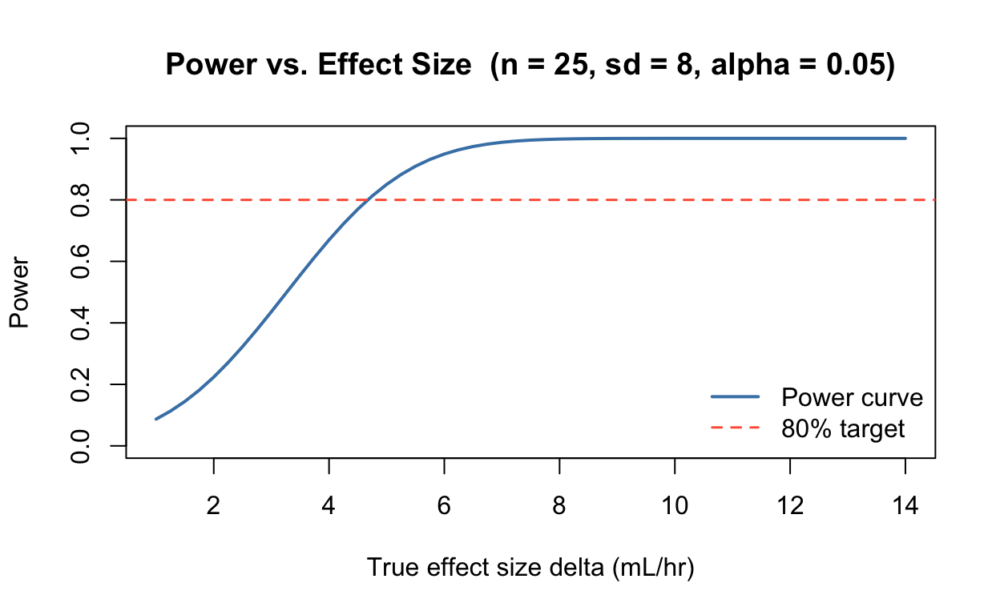

# mu0 <-
# muA <-
# sigma <-
# n <-
# se <- # standard error of the sample mean38 Type I and II Errors, and Power Analysis
39 Learning goals
Distinguish between Type I and Type II errors and correctly interpret them in a given context.
Identify how sample size, effect size, and significance level each affect the power (1 minus the Type II error rate).
40 Problem 1: Vocabulary of hypothesis testing
| Truth | Reject \(H_0\) | Fail to reject \(H_0\) |
|---|---|---|
| \(H_0\) is true | Type I error / false positive | Correct decision |
| \(H_0\) is false | Correct decision (power) | Type II error / false negative |
Setup. A plant biologist tests whether a newly synthesized growth hormone raises mean seedling height above the historical average of 20 cm. She applies the hormone to a random sample of 30 seedlings and carries out a one-sided \(t\)-test for testing \[H_0: \mu = 20 \quad \text{vs.} \quad H_A: \mu > 20.\] She obtains a p-value of \(0.07\).
For each statement below, decide whether True / False and give a brief explanation.
(a) She rejects \(H_0\) at \(\alpha = 0.10\).
Show answer
True. The p-value \(0.07 < 0.10 = \alpha\), so she rejects \(H_0\).
(b) She has significant evidence that \(\mu > 20\) at \(\alpha = 0.05\).
Show answer
False. The p-value \(0.07 > 0.05\), so she fails to reject \(H_0\) at the 5% level.
(c) The probability that \(H_0\) is true is \(0.07\).
Show answer
False. The p-value is the probability of observing a test statistic at least as extreme as the one observed, given that \(H_0\) is true. It is not the probability that \(H_0\) is true.
(d) If the hormone truly has no effect and she rejects \(H_0\), she has committed a Type II error.
Show answer
False. A Type I error is rejecting a true null hypothesis — here, falsely concluding the hormone works when it does not.
(e) If the hormone truly raises mean height and she fails to reject \(H_0\), she has committed a Type II error.
Show answer
True. A Type II error is failing to reject a false null hypothesis, i.e., missing a real effect.
(f) Increasing the sample size (keeping \(\alpha\) and the true effect size fixed) decreases the probability of a Type II error.
Show answer
True. A larger \(n\) shrinks the standard error, making the test statistic larger for the same effect. This increases power (\(1 - \beta\)) and thus reduces \(\beta\).
(g) A researcher who wants to limit false positives should choose a smaller value of \(\alpha\).
Show answer
True. \(\alpha\) is the Type I error rate (false positive rate) when \(H_0\) is true, so decreasing \(\alpha\) directly limits false positives. The trade-off is reduced power (higher \(\beta\)).
41 Problem 2: Visualizing the two error types
We will consider a setting where variance is known, so that we can draw the exact sampling distributions for the Z-test.
Setup. Suppose seedling heights have population standard deviation \(\sigma = 4\) cm. A researcher collects \(n = 25\) seedlings and tests \[H_0: \mu = 20 \quad \text{vs.} \quad H_A: \mu > 20\] at \(\alpha = 0.05\). Suppose the hormone truly shifts the mean to \(\mu_A = 22\) cm. (In real-life scenarios, the ‘true’ parameter is unknown. Here we consider a stylized setting for illustration.)
41.1 Identify the sampling distributions under null or truth
Under \(H_0\), the sample mean follows ___________.
Under the true mean \(\mu_A = 22\), the sample mean follows ____________.
41.2 Find the critical value / rejection region
For a one-sided upper-tail test at \(\alpha = 0.05\), the critical value is \[c = \mu_0 + z_{0.95} \cdot SE(\overline{X}).\]
# crit <- # compute the critical value for the Z-testAny observed \(\overline{x} > \text{crit}\) leads to rejection of \(H_0\).
41.3 Compute \(\beta\) and power
\[\beta = P(\overline{X} \leq c \mid \mu = \mu_A), \qquad \text{Power} = 1 - \beta.\]
Here \(P(...\mid \mu=\mu_A)\) simply indicates that we compute the probability under \(\mu=\mu_A\).
One clarification: We should call \(\beta\) the Type II error rate or the probability of Type II error, not just ‘Type II error’.
# beta_val <-
# power_val <-
# beta_val # Type II error rate
# power_val # Power41.4 Visualization (code is provided)
The plot shows both sampling distributions. The blue shaded area is the Type I error (\(\alpha\), the right tail of the null). The red shaded area is the Type II error (\(\beta\), the left tail of the alternative). Power is the unshaded right portion of the alternative distribution.
Show code
mu0 <- 20; muA <- 22
sigma <- 4; n <- 25
se <- sigma / sqrt(n)
crit <- mu0 + qnorm(0.95) * se
beta_val <- pnorm(crit, mean = muA, sd = se)
x <- seq(mu0 - 4*se, muA + 4*se, length.out = 600)
d_null <- dnorm(x, mean = mu0, sd = se)
d_alt <- dnorm(x, mean = muA, sd = se)
plot(x, d_null, type = "l", col = "steelblue", lwd = 2,
ylim = c(0, max(d_null, d_alt) * 1.3),
xlab = expression(bar(X) ~ "(cm)"), ylab = "Density",
main = "Sampling Distributions Under H0 and HA")
lines(x, d_alt, col = "tomato", lwd = 2)
abline(v = crit, lty = 2, col = "gray40")
# Type I error shading: upper tail of null distribution
x_I <- x[x >= crit]
polygon(c(x_I[1], x_I, tail(x_I, 1)),
c(0, dnorm(x_I, mu0, se), 0),
col = adjustcolor("steelblue", 0.4), border = NA)
# Type II error shading: lower tail of alternative distribution
x_II <- x[x <= crit]
polygon(c(x_II[1], x_II, tail(x_II, 1)),
c(0, dnorm(x_II, muA, se), 0),
col = adjustcolor("tomato", 0.4), border = NA)
text(crit - 1, 0.55, paste0("c = ", round(crit, 2)),
adj = 0, cex = 0.85, col = "gray30")
legend("topleft",
legend = c(
expression(H[0]*": "*mu*" = 20"),
expression(H[A]*": "*mu*" = 22")
),
col = c("steelblue", "tomato"),
fill = c(NA, NA),
border = c(NA, NA),
lwd = c(2, 2),
bty = "n", cex = 0.82)
legend("topright",
legend = c(
expression(alpha*" = Type I error (blue shading)"),
expression(beta*" = Type II error (red shading)")
),
col = c(NA, NA),
fill = c(adjustcolor("steelblue", 0.4),
adjustcolor("tomato", 0.4)),
border = c("black", "black"),
lwd = c(NA, NA),
bty = "n", cex = 0.82)
Discussion questions:
Which shaded region grows if we decrease \(\alpha\) from 0.05 to 0.01? What happens to \(\beta\)?
What would happen to both shaded regions if we increased \(n\) from 25 to 100?
42 Problem 3: Power analysis in R
In real-life scenarios, the ‘true’ parameter is unknown. The point of power analysis is to understand how the power shifts with the truth (think of it as the alternative). We will see how the power changes with sample size, significance and effect size (how far the truth/alternative is from the null).
Setup. A marine biologist measures oxygen consumption rate (mL O\(_2\)/hr) of a fish species. Historical data show a mean rate of \(\mu_0 = 50\) mL/hr with standard deviation \(\sigma = 8\) mL/hr. She tests whether a warming treatment changes the mean: \[H_0: \mu = 50 \quad \text{vs.} \quad H_A: \mu \neq 50,\] at \(\alpha = 0.05\). She suspects warming might shift the mean by about 4 mL/hr.
42.1 Computing power for a given sample size
The R function power.t.test computes power (or required sample size \(n\)) for one-sample and two-sample \(t\)-tests. The argument delta is the true effect size in original units.
power.t.test(n = 25, delta = 4, sd = 8,
sig.level = 0.05, type = "one.sample",
alternative = "two.sided")
One-sample t test power calculation
n = 25
delta = 4
sd = 8
sig.level = 0.05
power = 0.6697014
alternative = two.sidedInterpretation. With \(n = 25\), the test has about 67% power to detect a 4 mL/hr shift. In other words, there is roughly a 33% chance of missing this true effect.
42.2 Finding the required sample size
How large a sample is needed to achieve 90% power?
power.t.test(power = 0.90, delta = 4, sd = 8,
sig.level = 0.05, type = "one.sample",
alternative = "two.sided")
One-sample t test power calculation
n = 43.99552
delta = 4
sd = 8
sig.level = 0.05
power = 0.9
alternative = two.sidedWe need approximately 44 fishes to achieve at least 90% power.
42.3 Power curve — power as a function of \(n\)
ns <- 5:120
pwr_vec <- sapply(ns, function(n) {
power.t.test(n = n, delta = 4, sd = 8,
sig.level = 0.05, type = "one.sample",
alternative = "two.sided")$power
})
plot(ns, pwr_vec, type = "l", col = "steelblue", lwd = 2,
xlab = "Sample size (n)", ylab = "Power",
main = "Power vs. Sample Size (delta = 4, sd = 8, alpha = 0.05)",
ylim = c(0, 1))
abline(h = 0.80, col = "tomato", lty = 2, lwd = 1.5)
abline(h = 0.90, col = "darkorange", lty = 2, lwd = 1.5)
legend("bottomright",
legend = c("Power curve", "80% target", "90% target"),
col = c("steelblue", "tomato", "darkorange"),
lwd = c(2, 1.5, 1.5),
lty = c(1, 2, 2),
bty = "n")
42.4 Effect of \(\alpha\) on power
How does relaxing or tightening \(\alpha\) change power for fixed \(n = 25\)?
alphas <- c(0.001, 0.01, 0.05, 0.10, 0.20)
pwr_alpha <- sapply(alphas, function(a) {
power.t.test(n = 25, delta = 4, sd = 8,
sig.level = a, type = "one.sample",
alternative = "two.sided")$power
})
data.frame(alpha = alphas, power = round(pwr_alpha, 3)) alpha power
1 0.001 0.144
2 0.010 0.402
3 0.050 0.670
4 0.100 0.783
5 0.200 0.880As \(\alpha\) increases, the rejection region widens, making it easier to detect a real effect — so power increases. The trade-off is a higher Type I error rate.
42.5 Effect of effect size on power
How does the true shift \(\delta\) affect power (for \(n = 25\), \(\alpha = 0.05\))?
deltas <- seq(1, 14, by = 0.25)
pwr_delta <- sapply(deltas, function(d) {
power.t.test(n = 25, delta = d, sd = 8,
sig.level = 0.05, type = "one.sample",
alternative = "two.sided")$power
})
plot(deltas, pwr_delta, type = "l", col = "steelblue", lwd = 2,
xlab = "True effect size delta (mL/hr)", ylab = "Power",
main = "Power vs. Effect Size (n = 25, sd = 8, alpha = 0.05)",
ylim = c(0, 1))
abline(h = 0.80, col = "tomato", lty = 2, lwd = 1.5)
legend("bottomright",
legend = c("Power curve", "80% target"),
col = c("steelblue", "tomato"),
lwd = c(2, 1.5), lty = c(1, 2),
bty = "n")
Larger true effects are easier to detect — power increases with \(\delta\). Intuitively, a large signal stands out more clearly against the noise in measurement.
43 Summary
| What changes? | Consequence of change | Effect on power |
|---|---|---|
| Sample size \(n\) \(\uparrow\) | Hint SE decreases | Show Power ↑ |
| True effect size \(\delta\) \(\uparrow\) | Hint Signal grows | Show Power ↑ |
| Significance level \(\alpha\) \(\uparrow\) | Hint Rejection region widens | Show Power ↑ (but more false positives) |
| Population SD \(\sigma\) \(\uparrow\) | Hint SE increases, SNR drops | Show Power ↓ |